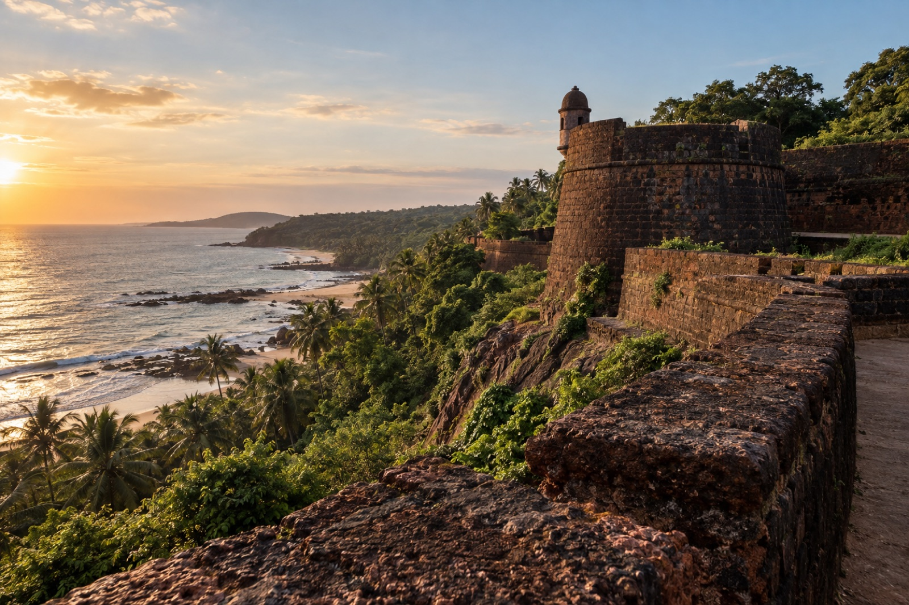
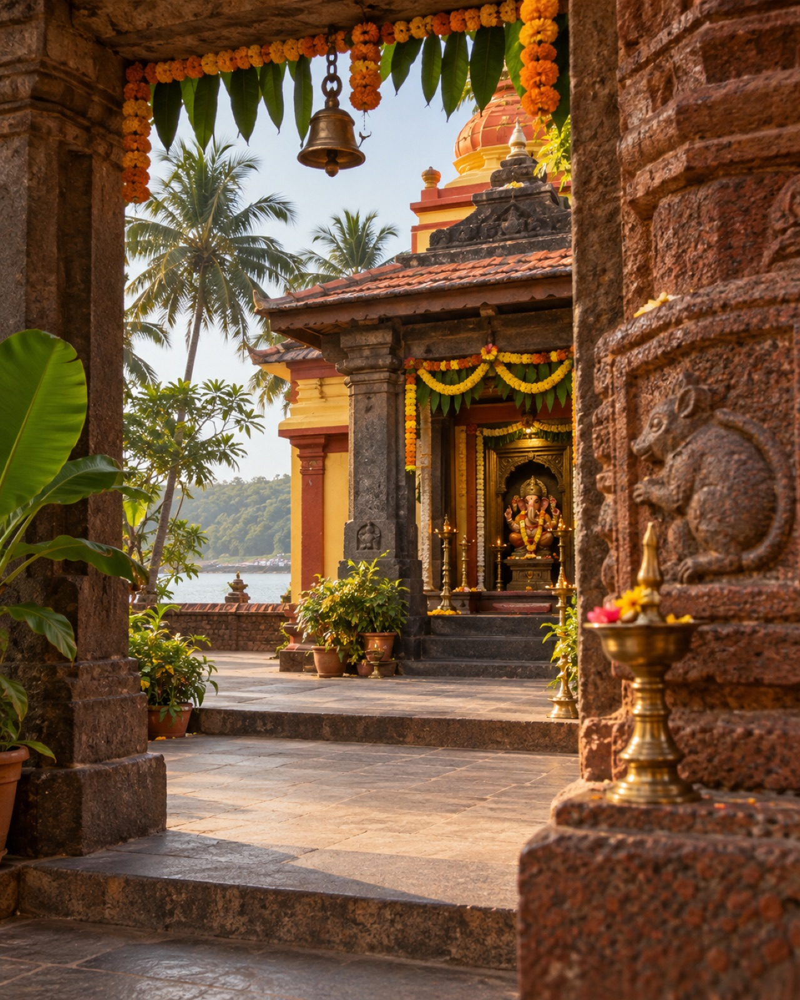
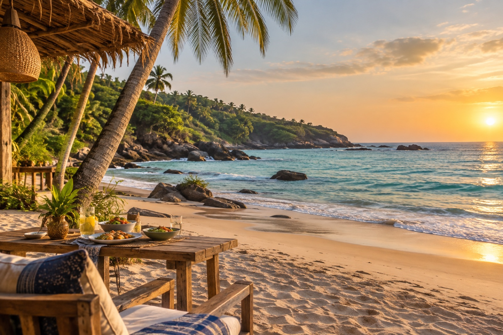
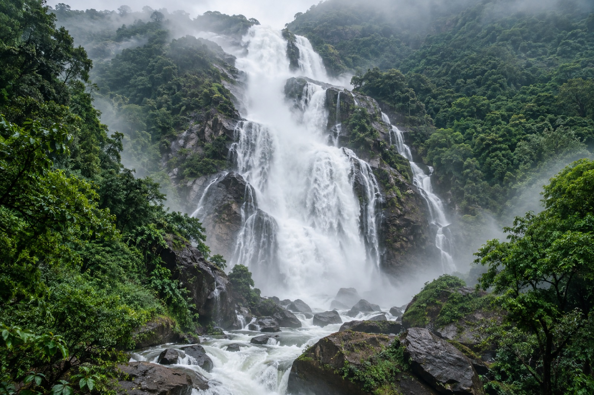
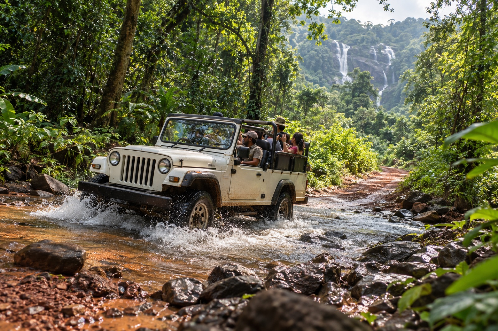
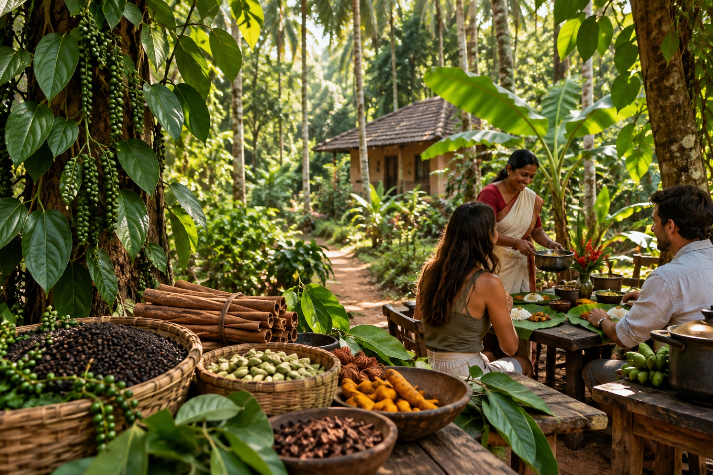
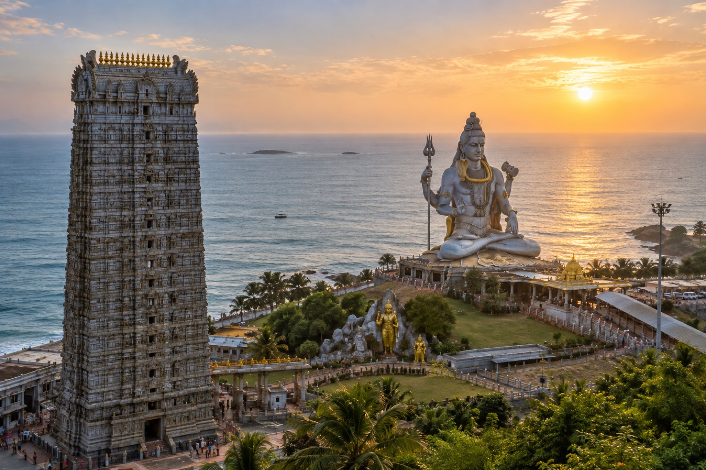
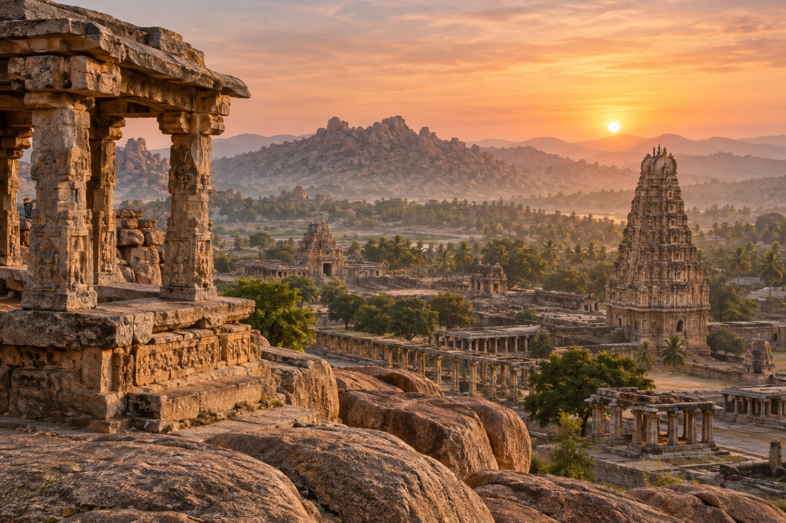

GOA FLOW · LIVING ROUTES
Goa that
stays with you.
The retreat leaves room for more than practice and the ocean. We travel to places where India opens through roads, spices, ancient temples, water and people. Routes may change with weather and availability — the point is to keep each day vivid and comfortable.

Feel the place.
06 / EXCURSIONS IN THE PROGRAMME
Two full excursion days are included in the retreat. We travel by a comfortable air-conditioned coach, in a small group and without rushing. Murudeshwar and Hampi can be added separately as two independent journeys for those who want to continue travelling.
01 · FULL DAY · MAHARASHTRA
Redi Fort,
Ganesh and Paradise Beach.
In the morning we board a comfortable air-conditioned coach and travel north into Maharashtra. Our first stop is Redi Fort: we walk through the ruins, hear the story of the place and take beautiful photographs by the sea and old walls.
Then we visit the Ganesh temple in Redi — a quiet, living place with a special atmosphere. We finish the day at Paradise Beach: time to swim, rest, try snorkelling when the sea is calm and enjoy a beautiful beachside lunch.






02 · FULL DAY · WATERFALLS AND SPICES
Dudhsagar,
jeep safari and a spice plantation.
The second excursion day starts on the road to Dudhsagar Waterfall. After the coach, we switch to jeeps and take the forest track — through red earth, green jungle and spray to one of Goa’s most spectacular places.
After the waterfall we visit a spice plantation: see cardamom, pepper and cinnamon growing, have lunch and rest in the shade. Two stages of one full day — waterfall and living garden, where Goa opens through nature, scent and flavour.
03 · OPTIONAL EXCURSION · KARNATAKA
Murudeshwar,
the ocean and Shiva.
A separate coastal Karnataka route for those who want to see another side of southern India. We travel to the Murudeshwar temple complex, take in the huge Shiva statue and leave time for the Arabian Sea panorama.
This journey is about scale, stone, wind and ocean — an optional day that can be added to the retreat without mixing it into the two included excursion days.

04 · OPTIONAL TWO-DAY JOURNEY
Hampi —
go deeper for two days.
If you want to continue after the retreat, add Hampi for two days: ancient temples, stone hills, sunrise and a place that cannot be captured in one photograph.

Open the Hampi page ↗